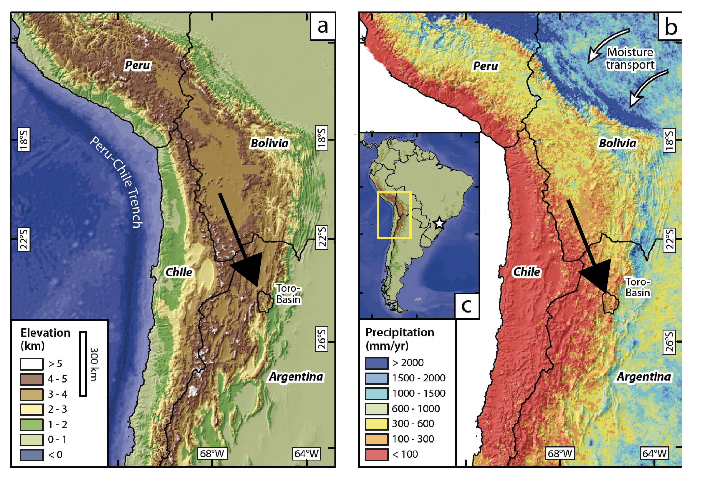
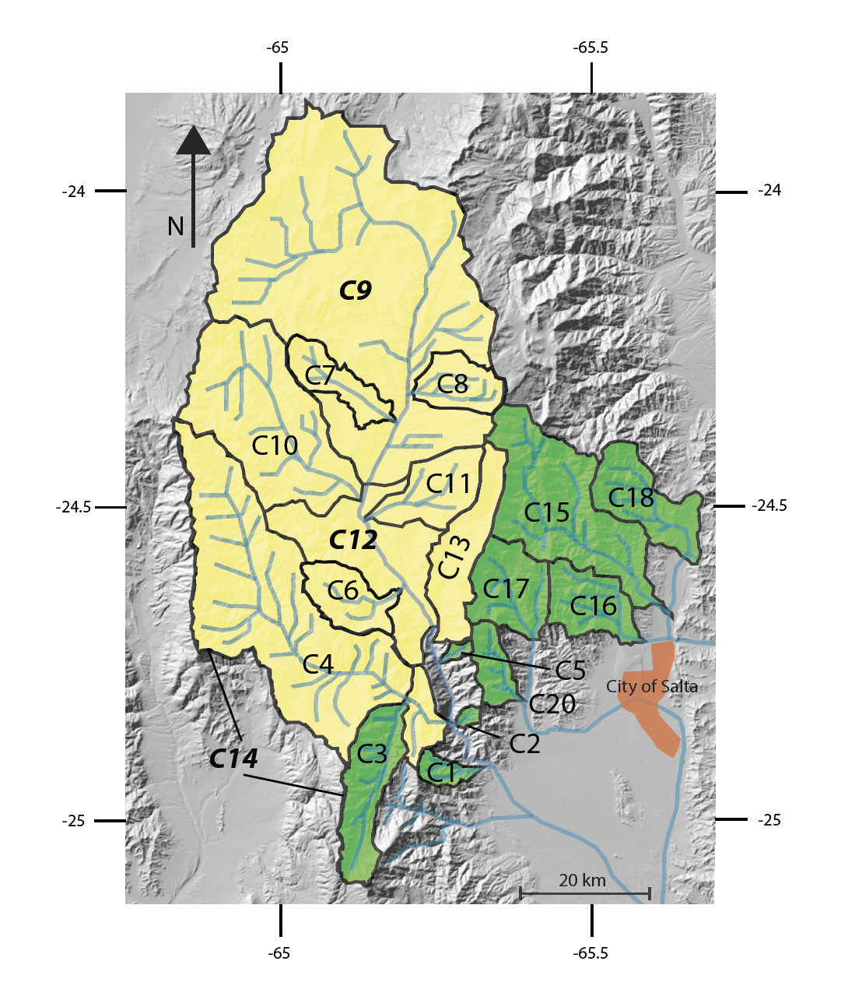
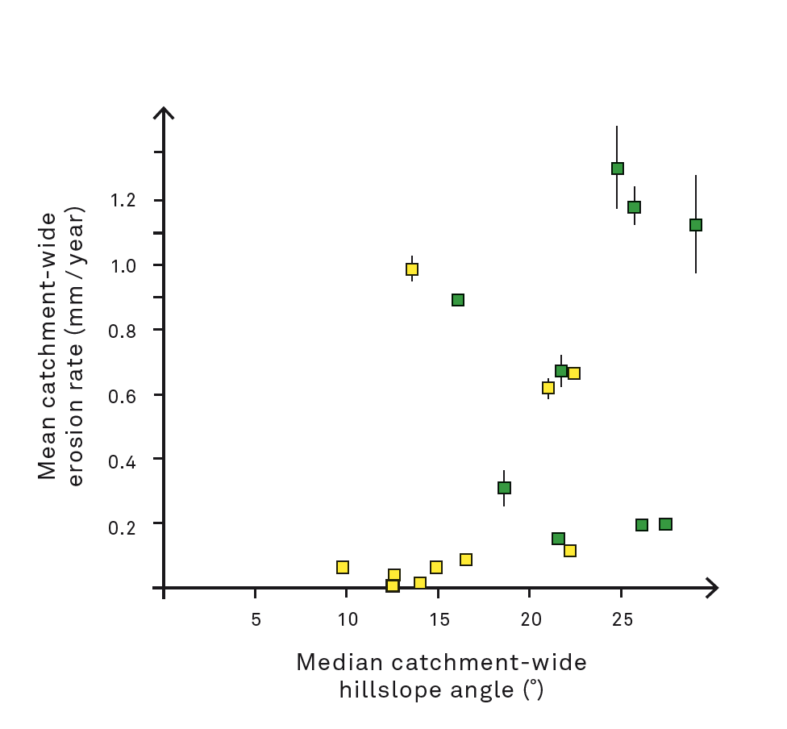
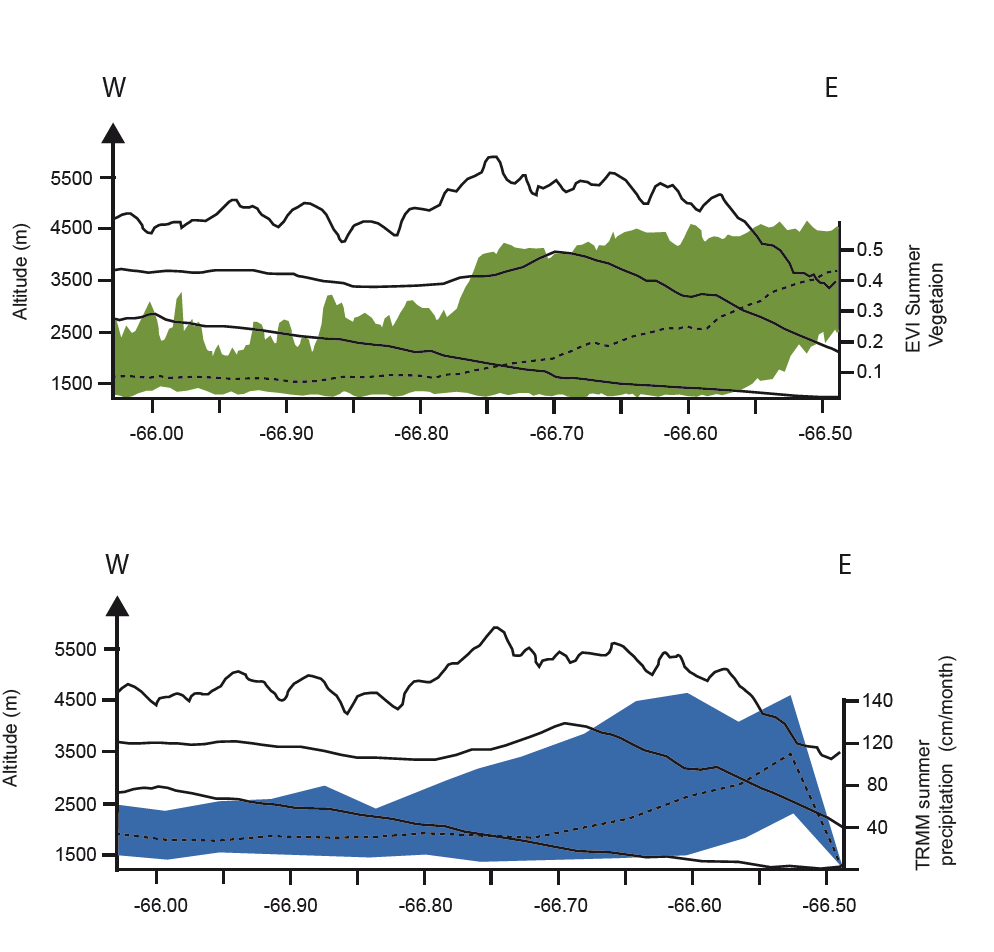

To understand the feedback mechanism on climate, tectonics and erosion, the Eastern Cordillera of the NW Argentine Andes provides an excellent laboratory. It has a strong climatic gradient, resulting in a humid subtropical eastern flank of the mountain range and an arid interior. Eight new cosmogenic derived erosion rates and eleven additional erosion rates from Bookhagen and Strecker (2012) have shown that erosion in the Toro Basin responds to two different climate regimes. In the orogen interior moisture is blocked by topography resulting in low precipitation, sparse vegetation and slow erosion rates (< 0.2 mm / year). The humid regime shows strong seasonable precipitation, landslide activity, fast erosion rates (0.2 – 1.3 mm / year), steeper hillslopes and a denser vegetation. Topographic metrics and stream power laws explain erosion rates < 0.2 mm / year in the Toro Basin. Landscape denudation processes beyond this threshold are controlled by frequency of landslide occurrence. Three tools are used to analyze the interdependent feedback cycles believed to control denudation processes in the Toro Basin: a satellite derived vegetation index named the Enhanced Vegetation Index (EVI) with a resolution of 250 m; a 90 m Shuttle Radar Topography Mission (SRTM) Digital Elevation Model (DEM); and a satellite derived calibrated precipitation measuring tool, the Tropical Rainforest Measurement Mission (TRMM). Further the study shows, that catchment-wide erosion rates peak at structurally stressed zones in the transition between the arid and humid regime.
|  |
Fig.1The arrow indicates the Toro basin in Northewest Argentina, where the study area is located. Topography and precipitation of the Central Andes a: Topographic map b: Precipitation pattern of the Cenrtral Andes. Note that the highest precipitation patterns are on the eastern flank of the Andes where topography rises. (after Bookhagen and Strecker 2008) Note that the Toro basin is located witin the transition zone between wet and dry climate. |
|  |
Fig.2Shaded relief calculated from a DEM representing the working area. Black solid lines represent catchments with cosmogenic derived erosion rates. C1 – 8 are from this study. C9 – 20 are from Bookhagen and Strecker (2012). Catchments that are bold lettered have several sub catchments. Yellow catchments are defined as arid and green catchments as humid. |
|  |
Fig.3Mean catchment-wide erosion rates are showing a linear relationship with increasing hillslope values (Er < 0.4mm / year). Yellow data points are dereived from catchments in the arid regime and green data points stand for catchments in the humid regime. Note that highest erosion rates are occurring in the humid regime. |
|  |
Fig.4Profile from south to north of the working area. TRMM summer precipitation and EVI summer vegetation cover respond to local topography. Solid black line represents (from top to bottom): maximum topography, mean and minimum. The colored fields represent minimum and maximum values, the dashed line within stands for mean values. Note that Vegetation cover responds to local minima in maximum topography. |